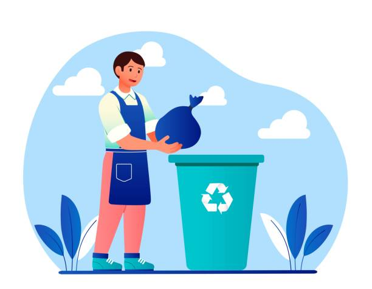

A Importância da Coleta Seletiva: Fazendo a diferença em São Paulo!

Você sabia que separar o lixo em casa pode fazer um mundo de diferença para a nossa cidade? A coleta seletiva é mais do que jogar o lixo em lixeiras coloridas. É um ato de cidadania que ajuda a proteger o meio ambiente, gera emprego e renda e torna São Paulo uma cidade mais sustentável.
Por que a coleta seletiva é tão importante?
- Menos lixo nos aterros: Quando a gente separa o lixo reciclável, ele vai para cooperativas e indústrias que transformam esses materiais em novos produtos, diminuindo a quantidade de lixo que vai para os aterros sanitários.
- Mais recursos naturais: Ao reciclar, a gente economiza recursos naturais como água e energia, que são usados para fabricar produtos novos.
- Geração de empregos: A coleta seletiva gera muitos empregos, principalmente para as cooperativas de catadores, que transformam o lixo em renda.
- Cidade mais limpa e saudável: Com menos lixo nas ruas e uma gestão adequada dos resíduos, a cidade fica mais limpa e saudável para todos.
Coleta seletiva em São Paulo: como funciona?

Em São Paulo, a coleta seletiva é realizada em algumas regiões da cidade. Para que você possa participar desse movimento, aqui vão algumas dicas:
- Separe seus resíduos: Separe o lixo reciclável do lixo orgânico e do lixo não reciclável. Utilize lixeiras diferentes para cada tipo de resíduo.
- Limpeza dos materiais: Lave bem os materiais recicláveis antes de descartá-los. Isso evita o mau cheiro e a contaminação dos outros resíduos.
- Horários de coleta: Fique atento aos dias e horários da coleta seletiva na sua região. Normalmente, a coleta é feita em dias alternados da coleta do lixo comum.
Onde descartar corretamente?
Se na sua região não houver coleta seletiva, você pode levar seus materiais recicláveis a um Ponto de Entrega Voluntária (PEV). A cidade conta com várias opções, incluindo:
- Parques
- Praças
- Mercados e feiras
Desafios da coleta seletiva
Apesar dos benefícios, a coleta seletiva ainda enfrenta muitos desafios em São Paulo:
- Falta de conscientização: Muitas pessoas ainda não sabem como separar o lixo corretamente.
- Desperdício de materiais: Em algumas regiões, muitos materiais recicláveis ainda vão para o lixo comum, desperdiçando recursos valiosos.
- Infraestrutura insuficiente: A cidade ainda precisa melhorar a infraestrutura de coleta e reciclagem para atender a todos os cidadãos.
Juntos, podemos fazer a diferença!
A coleta seletiva é uma responsabilidade de todos nós. Ao separar o lixo corretamente e participar da coleta seletiva, você ajuda a construir um futuro mais sustentável para São Paulo e para o planeta. Vamos juntos fazer a diferença!